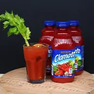

Clamato es una bebida comercial estadounidense hecha de concentrado de jugo de tomate reconstituido, azúcar, especias, caldo seco de almejas y glutamato monosódico
Fue registrado y fabricado por Mott's, su nombre resulta de abreviar almeja (clam) y tomate (tomato). Se consume en México, Estados Unidos y Canadá.
En 1935, la Corporación Clamato de Nueva York produjo una combinación de jugo de tomate y almejas
En 1940, el Lobster King Harry Hackney recibió la marca Clamato su restaurante de Atlantic City, Hackney's, vendía jugo de Clamato enlatado
En 1957, McCormick & Company, Inc. solicitó, y más tarde adquirió, la marca Clamato para la mezcla sazonada de jugo de tomate y jugo de almeja
El Clamato fue producido en su forma actual a partir de 1966 por la compañía Duffy-Mott en Hamlin, Nueva York, por Francis Luskey, un químico y otro empleado que quería crear un cóctel estilo el Manhattan clam chowder combinando jugo de tomate y caldo de almejas con especias. Sin embargo, su historia se extiende más atrás ya que una bebida casi idéntica ya estaba presente en un libro de cocina publicado una década antes. Los empleados nombraron el nuevo cóctel Mott's Clamato y aseguraron la marca registrada de la nueva marca.
La marca era propiedad de Cadbury-Schweppes después de que la compañía comprara Mott's en 1982. A partir de 2008, es propiedad de Keurig Dr Pepper después de que el negocio se separó de Cadbury-Schweppes
